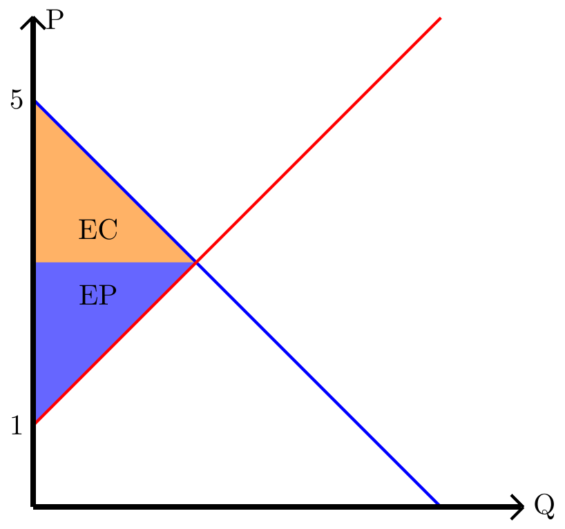
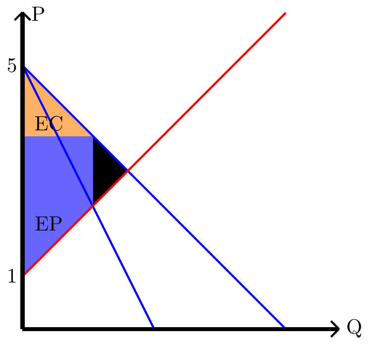
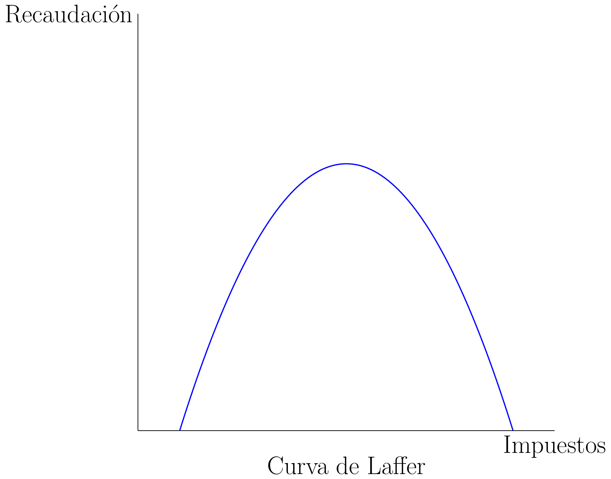
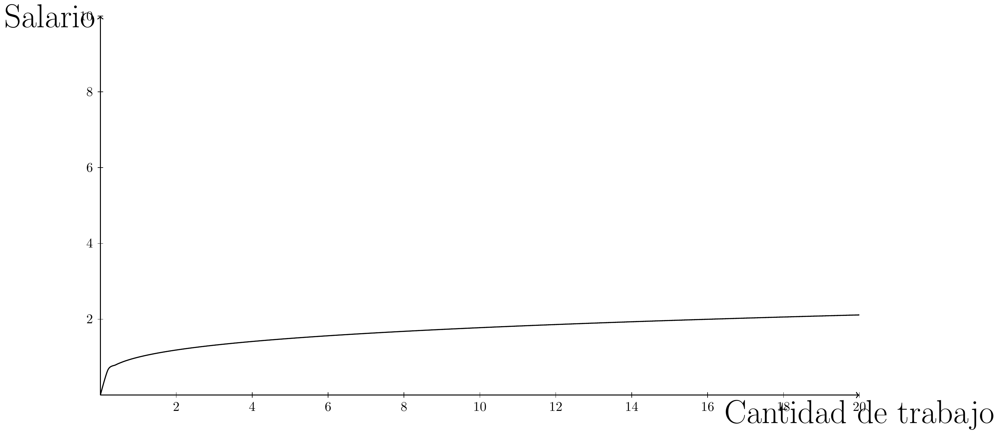
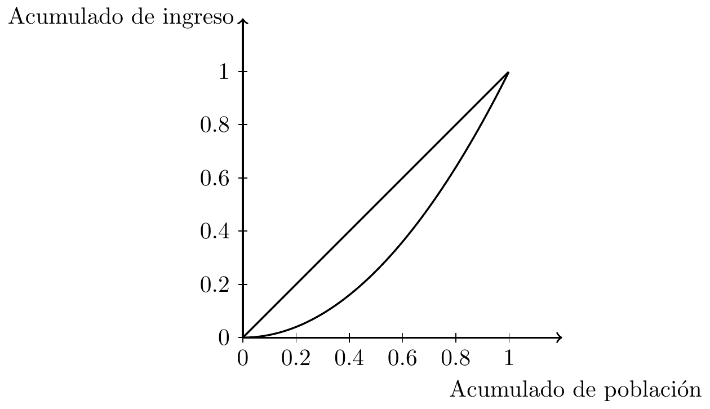

4 Sistema impositivo y economía laboral.
4.1 Financiamiento del gobierno:
El gobierno necesita financiar sus gastos, para esto tiene dos maneras, usar el impuesto o la deuda.
Si el gobierno gasta más de lo que recibe, entonces tiene un déficit presupuestario, pero si gasta menos de lo que recibe tiene un superávit presupuestal.
Los impuestos dan principalmente cargos administrativos para que la gente cumpla las leyes fiscales.
Un sistema impositivo es más eficiente mientras recauda más ingreso y mientras menos sea el costo de los contribuyentes, es decir, equitativamente.
En el principio de beneficios dice que todos deben pagar sus impuestos con respecto a los beneficios que recibe del gobierno. Mientras que el principio de pago dice que los impuestos deben ser cobrados según dos tipos de equidad, Equidad horizontal: los contribuyentes con misma capacidad de pago pagan igual cantidad y Equidad vertical: los contribuyentes con mayor capacidad de pago pagan más.
Los impuestos pueden ser: proporcionales, es decir, todos deben pagar la misma fracción de sus ingresos, regresivos, los contribuyentes con mayor ingreso deben pagar una fracción menor de su ingreso que los con menor ingreso o progresivos, los contribuyentes con menor ingreso deben pagar una fracción menor de su ingreso que los con mayor ingreso.
El impuesto altera el equilibrio de precios, por lo que muchas veces no se toma en cuenta en la decisión de estos las consecuencias indirectas.
4.2 Fallas del mercado:
La economía de bienestar tiene una fuga al no tomar dos supuestos importantes:
Poder de mercado: Hay veces que existe un solo vendedor (monopolio) o un solo vendedor (monopsonio).
externalidades: Las decisiones de los compradores y vendedores a veces afectan a algún tercero y no paga o compensa el daño a este último, un ejemplo típico es la contaminación.
Estas fugas se llaman fallas de mercado y hacen que el punto de equilibrio no sea eficiente.
Hay externalidades negativas cuando valor del bien el consumido o del bien producido es menor del que la da la sociedad.
Por ejemplo:
La producción de jeans gasta las aguas limpias, y el consumo de autos, consume aire puro.
En estas situaciones el estado puedo interceder poniendo impuestos como incentivos, prohibiciones por decreto de ley, regulaciones como permisos. En una situación ideal estas intervenciones estatales ayudan a compensar el costo indirecto.
Esto puede ser a través de la propiedad privada, como multar a una empresa que contamina más de lo establecido, o a través del comportamiento privado como prohibir la caza excesiva de un animal en peligro de extinción.
También pueden solucionar estos problemas los privados por el teorema de Coase: ``si las partes pueden negociar sin costo y si los derechos iniciales están bien definidos, entonces es posible una solución privada y además eficiente”.
Los free-riders o parásitos son aquellos individuos que se benefician d algo y no pagan los costos de aquello. Por ejemplo, dentro de un grupo para las tareas del curso puede existir alguien que no hizo nada en el trabajo, pero como la nota es grupal se beneficia de ello sin haber hecho nada.
Dentro de los bienes que están dentro de estas fallas de mercados se pueden clasificar de dos formas, excluyentes si se puede evitar que las personas usen ese bien y si es rival de consumo, dicho de otra forma, si son limitados y si alguien usa el bien reduce la capacidad para que otro lo use también.
| - | Es excluyente. | No es excluyente. |
|---|---|---|
| Es rival en consumo. | Bienes privados. - Ropa. - Teléfonos. |
Recursos comunes. - Peces en el océano. - El ambiente. |
| No es rival en consumo. | Bienes reservados. - Televisión por cable. - Protección de incendios. |
Bienes públicos. - Defensa nacional. - Alarmas de emergencias. |
Cuando el parásito evade el costo de transacción influye en la eficiencia de las instituciones benéficas o de bien común, como son la defensa nacional, investigaciones y lucha contra la pobreza.
A la parábola que muestra como los bienes comunes se usan más de lo que se debe, se llama tragedia de los comunes.
Con respecto al poder de mercado, existen dos tipos de monopolio:
- Monopolios creados por el gobierno: Generalmente, están relacionados con la creación de un nuevo bien, si el gobierno considera que este es completamente original, le dará al creador una patente para que solo pueda venderlo el durante un tiempo determinado.
- Monopolios naturales: Si una empresa puede vender un mismo bien más barato porque sus costos de producción son menores, entonces tendrá todo el poder de mercado.
Al tener todo el poder de mercado, estos tienen el poder del precio de demanda, pero no de la oferta, pongamos el caso de un empresario benevolente que tenga todo el poder de mercado y luego, propongamos que se corrompe y que sube los precios de tal forma que su excedente sea mayor, para el primer caso, tendremos el siguiente gráfico de su mercado:
Luego, cuando se corrompe, se verá algo así:

4.3 Curva de Laffer:
La curva de Laffer hace referencia a lo recaudado por el gobierno con relación a la cantidad de impuesto agregado. Podemos verla así:

El punto de máxima recaudación es el punto en que el peso muerto es igual a la recaudación. Donde podemos decir que el peso muerto es:
\[ \text{Peso muerto}=\frac{(P_f-P_i)\cdot (Q_i-Q_f)}{2} \]
Y lo recaudado por el estado es:
\[ \text{Gob}=Q_f\cdot (P_f-P_i) \]
Además, \(Q_i\) y \(P_i\) son los puntos de equilibrio y los puntos \(Q_f\) y \(P_f\) son las coordenadas del nuevo punto de equilibrio.
4.4 Demanda y oferta de trabajo:
Además de la oferta y demanda en función del precio, existen por insumos y servicios, donde la mayoría de los bienes producidos son insumos para otros bienes, como son los chips para los autos, computadores, sistemas de riego, etc.
Los insumos son tierra, trabajo y capital, por otro lado, está la producción que depende de los insumos disponibles. Cuando se grafica este tipo de oferta o demanda, se pone en el eje de las abscisas o de las “\(x\)”, los insumos y en el eje de las ordenadas, o el de las “\(y\)” la producción.
Demanda: en la demanda de trabajo, existe el “producto marginal del trabajo”, o el incremento la cantidad producida por unidad de trabajo adicional, esto es decreciente, esto quiere decir, que mientras más personas se dedican a hacer un producto, menos producirá cada persona.
Oferta: en la oferta de trabajo, muestra las decisiones de los trabajadores entre la disyuntiva ocio y trabajo, para poder incentivar el trabajo un recurso típico y mayoritariamente efectiva es la subida de sueldos. Hay tres factores que mueven la curva de la oferta de trabajo: inmigración, cambio de preferencias, cambio de oportunidades de trabajo.
Ejemplificando, los dos últimos son, preferir trabajar como minero que cosechero para el cambio de preferencias, o en el caso de querer seguir con la especialización actual, preferir cosechar en los cerezos que en las manzanas.
Punto de equilibrio: el punto de equilibrio hace referencia al salario que tendrá la persona, es donde intersecan la oferta y la demanda.
4.5 Determinantes de los salarios de equilibrio:
Hay cuatro determinantes que definirán el salario de una persona:
| Determinante: | Explicación: | Ejemplo: |
| Diferencial compensativo. | Es la diferenciación al compensar características no monetarias. | Turnos nocturnos. |
| Capital humano. | Educación y capacitación para poder hacer el trabajo. | Enseñar a los lecheros cómo se ordeña. |
| Educación como señal. | Según la teoría no ayuda a la producción, pero da una referencia a su capacidad para lograr hacer el trabajo. | Persona que realizó sus estudios en una buena academia para el trabajo que se busca. |
| Suerte, esfuerzo y capacidad. | Son características innatas del trabajador, pero son difíciles de medir de forma justa. | Una persona que se levanta más temprano para ir a trabajar que otra. |
Podemos graficar la relación de producción y salario de la siguiente forma:

4.6 Diferenciación de los salarios:
Un excedente de salario es cuando el salario esta por sobre del punto de equilibrio, esto puede pasar por tercer razones: salario mínimo más alto de lo que corresponde, sindicatos que amenazan con huelga si no se sube el sueldo, salarios de eficiencia para inducir que los trabajadores rindan más.
Cualquier excedente de salario implica desempleo.
Existen también otra diferenciación del salario, esta es la discriminación ocurre cuando se les paga una cantidad distinta a las personas de distinta etnia, raza, sexo, etc. Esta práctica sucede tanto en sectores privados como estatales. Una empresa que quiere crecer en su beneficio tiende a eliminar la mayor cantidad de diferenciaciones posible.
4.7 Mercados de trabajo:
Antes de, definiremos un par de conceptos: - \(Q(K,L)\) es producción. - \(K\) es capital, puede referirse al capital de añadir una maquina de producción por ejemplo. - \(L\) es la cantidad de trabajadores. - \(\bar{n}\) la variable de n es fija, actúa como constante.
Ahora, todos estos conceptos tienen otras definiciones, en la siguiente tabla se explicarán:
| Medida: | Fórmula: | Utilidad: |
| Producto marginal del trabajo: | \( \frac{dQ(K,L)}{dL} \) | Crecimiento de producción por unidad de trabajo |
| Producto marginal del capital: | \( \frac{dQ(K,L)}{dK} \) | Crecimiento de producción por unidad de capital (al agregar una máquina, por ejemplo) |
| Productividad media del trabajo: | \( \frac{Q(K,L)}{L} \) | Promedio de producción por cada trabajador |
| Productividad media del capital: | \( \frac{Q(K,L)}{K} \) | Promedio de producción por cada recurso que usa el capital |
| Retornos de trabajo: | \( \frac{d^2Q(K,L)}{dL^2} \) | Comportamiento de producción al agregar más o menos trabajadores |
| Retornos de capital: | \( \frac{d^2Q(K,L)}{dK^2} \) | Comportamiento de producción al agregar más o menos capital |
Los retornos de producción serán: \[ \text{Retornos} = \begin{cases} \text{Constantes a escala}, & \text{si } \frac{d^2Q(L,K)}{d(L\vee K)^2} = 1 \\ \text{Crecientes}, & \text{si } \frac{d^2Q(L,K)}{d(L\vee K)^2} > 1 \\ \text{Decrecientes}, & \text{si } \frac{d^2Q(L,K)}{d(L\vee K)^2} < 1 \end{cases} \]
Caso de ejemplo:
Tenemos la siguiente función de producción:
\[ Q(K,L)=L^3+2KL^2+K^3 \]
Calcule todas las medidas de producción y la producción marginal del trabajo para \(\bar{K}=5\).
Respuesta:
| Medida: | Resultado: |
| Producto marginal del trabajo: | \(3L^2 + 4KL\) |
| Producto marginal del capital: | \(2L^2 + 3K^2\) |
| Productividad media del trabajo: | \(L^2 + 2K + \frac{K^3}{L}\) |
| Productividad media del capital: | \(\frac{L^3}{K} + 2L^2 + K^2\) |
| Retornos de trabajo: | \(6L + 4K\) |
| Retornos de capital: | \(6K\) |
Para \(\bar{K}=5\) la producción marginal del trabajo será: \[ P(L)3L^2+20L \]
4.8 Índice de pobreza:
El índice de pobreza es el porcentaje de la población que su sueldo familiar está por debajo de la línea de pobreza, y esta última es el nivel establecido por el gobierno que distingue desde que punto una familia tiene un sueldo bajo o normal.
Curva de Lorenz, es un gráfico que representa en eje horizontal se sitúan la población en porcentaje que tiene como máximo un sueldo y en el eje vertical el sueldo en porcentaje, en el siguiente grafico se puede ver la curva de Lorenz.

Por otro lado, está el coeficiente de Gini: esta muestra en un parámetro
de \([0,1]\) el nivel de desigualdad. Donde 0 es la perfecta igualdad: \[ G=1-\left|\sum_{k=1}^{n-1}\left(X_{k+1}-X_k\right)\left(Y_{k+1}+Y_k\right)\right| \]
Donde \(X\) es la proporción acumulada de población e \(Y\) es la proporción acumulada de ingresos.
Por ejemplo:
Dividiremos la población en 10 deciles con sus sueldos promedio:
| Percentil "X" | Ingresos "Y" |
| 10 | 0.02 |
| 20 | 0.03 |
| 30 | 0.04 |
| 40 | 0.06 |
| 50 | 0.08 |
| 60 | 0.1 |
| 70 | 0.12 |
| 80 | 0.14 |
| 90 | 0.17 |
| 100 | 0.24 |
Entonces la sumatoria resolviendo el primer decil queda así:
\[ G=1-\left|\left(0,2-0,1\right)\left(0,3+0,2\right)+\sum_{k=2}^{n-1}\left(X_{k+1}-X_k\right)\left(Y_{k+1}+Y_k\right)\right| \]
Existen tres filosofías para solucionar el problema de la pobreza:
- Utilitarismo: El gobierno decide qué medidas tomar para que todos aumenten sus beneficios.
- Liberalismo: El gobierno deberá elegir políticas consideradas justas, evaluadas por un observador objetivo.
- Liberalismo del libre albedrio: El gobierno debe castigar los crímenes y hacer velar los acuerdos voluntarios, la igualdad de oportunidades vale más que la igualdad en el ingreso.
También existen políticas para intentar reducir la pobreza: - Regular sueldo mínimo. - Asistencia social o programas de gobierno para complementar el ingreso. - Subsidio a hogares con bajos ingresos. - Entregar bienes y servicios de parte del gobierno.